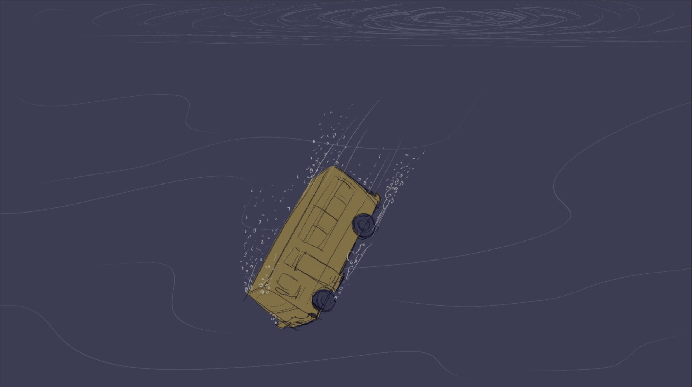
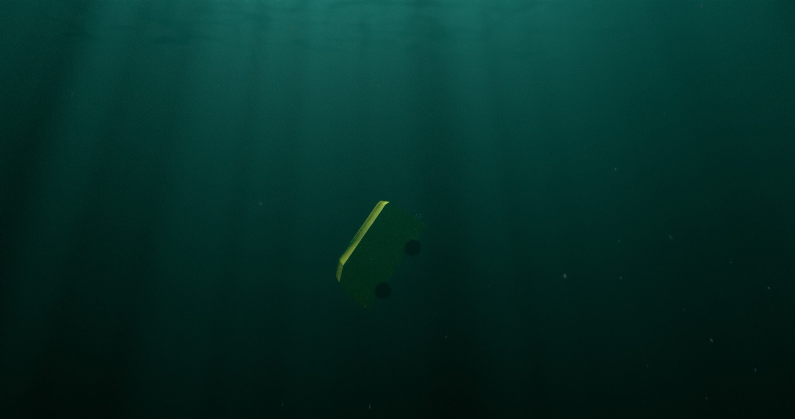

Baby John
VFX shot, as part of the production design team — Baby John (2024), Hindi.
Baby John is a 2024 Hindi action thriller directed by Kalees, presented by Atlee and Jio Studios, starring Varun Dhawan. I contributed a VFX shot as part of the production design team — a school bus sinking underwater, built end to end in Blender: staging the shot from a concept sketch, modeling and lighting the underwater look, then animating the sink itself.
From sketch to shot
Before any 3D work, the shot started as a quick sketch — the bus's angle as it goes under, the direction of the sink, where the light from the surface would fall. That early staging call carried through to the final camera angle and motion, so it was worth getting right on paper first, cheaply, before touching Blender.

Render engine lookdev
I tested the underwater look in both of Blender's render engines before committing to one for the animation. Cycles, path-traced, gave the more physically accurate light falloff and murk — closer to how light actually behaves underwater — but at a real cost in iteration time. Eevee, real-time, let me try far more lighting and fog variations per hour, at the expense of some of that physical accuracy. The final animated sink was rendered in Eevee for exactly that reason: with a moving camera and a bus tumbling through frame, being able to iterate fast mattered more than chasing Cycles' extra realism.
